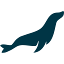

Escucha y comunicación
Atendí consultas y promoví planes móviles por teléfono, explicando opciones y respondiendo dudas de clientes.
PERSONAS · PROCESOS · TECNOLOGÍA
Soy Leidy Diana Principe Quispe, también Cinapri. Mi experiencia reúne televentas, atención, prevención de fraude, QA y desarrollo de software.
Me interesa aportar en prospección y seguimiento de servicios tecnológicos, combinando escucha, orden y criterio técnico.

01 / PERFIL
Empecé en televentas y atención. Después trabajé en operaciones, monitoreo de fraude y soporte, y llevé esa mirada al desarrollo y la calidad de software.
Atendí consultas y promoví planes móviles por teléfono, explicando opciones y respondiendo dudas de clientes.
Verifiqué ventas y solicitudes, reporté indicios de fraude y escalé incidencias para proteger la experiencia del cliente.
Hoy combino soporte, desarrollo y QA para entender tanto a las personas como a los sistemas que utilizan.
02 / EXPERIENCIA
He trabajado con clientes, operaciones y equipos técnicos. Cada etapa amplió mi forma de escuchar, hacer seguimiento y resolver.
Ventas, atención, verificación y prevención.
FEB 2020 — FEB 2021
Telefónica Ingeniería de Seguridad · TIS
En la Jefatura de Prevención verifiqué solicitudes y ventas, detecté errores e indicios de fraude y reporté hallazgos para proteger a clientes y empresa.
SEP 2019 — FEB 2020
Tgestiona · Movistar Te Ayuda
Operé aplicaciones de servicios móviles y fijos, como Atis, CMS y Gestel, y escalé incidencias masivas.
DIC 2016 — SEP 2017
Teleatento · Movistar
En Televentas Argentina promoví planes móviles por teléfono y resolví consultas con apoyo de +Simple, Remedy y Equifax. Después apoyé la operación de Movistar fija en back office.
Desarrollo, soporte, QA y diseño técnico.
MAR — SEP 2026
SOLTECJS
Desarrollo web con PHP y Laravel, soporte a usuarios y trabajo con bases de datos. Apliqué Python y Playwright en automatización y apoyé en las pruebas de facturación electrónica.
NOV 2023 — ENE 2025
Rolex Constructores SAC
Implementé soluciones y brindé soporte tecnológico; desarrollé una aplicación móvil con geolocalización para el control de asistencia.
JUL — OCT 2023
Arqkon
Diseñé planos para colegios del Bicentenario siguiendo estándares BIM internacionales.
JUN 2022 — FEB 2023
Universidad Nacional de Trujillo · Facultad de Enfermería
Desarrollé el sitio web institucional, señalado como una contribución para la acreditación SINEACE.
EN DETALLE / QA
En SOLTECJS apoyé en las pruebas de facturación electrónica. También utilicé Python y Playwright para automatización dentro de mis funciones de programación y soporte.

MariaDB03 / PROYECTOS
Muestro el objetivo y el estado real de cada proyecto. Ambos continúan en desarrollo.
SISTEMA DE CENTRO DE ATENCIÓN
Estoy construyendo José para organizar solicitudes y tickets con trazabilidad. También integro chat y actualizaciones en tiempo real.
Pasa el cursor o toca un icono para ver su nombre.
PRODUCTO PROPIO DE GESTIÓN
Estoy desarrollando NISSI alrededor de servicios, citas y disponibilidad. Usuarios, roles, procesos y pagos forman parte del alcance previsto.
Pasa el cursor o toca un icono para ver su nombre.
Una selección de trabajos públicos y experiencias aplicadas.
04 / CONTACTO
Me interesa colaborar en prospección, atención y proyectos digitales. Si mi perfil encaja con tu equipo, estaré encantada de conversar.
dprincipe.q@gmail.com